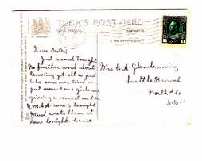
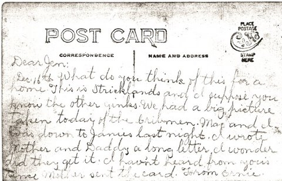

The Family Chronicle
No. 185 March 31, 2010
____________________________________________________________________
WW1

Post card dated St. John, N.B. 1915 sent to Jane Glendenning from her brother Ernest Watling who, I believe, was in Sussex prior to shipping overseas.
The Family Chronicle (Copyright) is an occasional newsletter published by Don Glendenning and posted on the family website. It is intended to share information about my family, community and the times in which I grew up. While every effort is made to be accurate, errors are likely to occur. Comments, enquiries and information may be sent to 62 Queen Elizabeth Drive, Charlottetown, PEI, C1A 3A9. Tel: 902 892 5859. Email: don@glendenning.net Web: www.glendenning.net/don

Undated card from Ernest Watling to his sister, Janet (Watling) Godfrey from Parksville, Tennessee. Where he was working on a Hydroelectric Power Dam, Ocooee No. 1
Barry MacKenzie sent the following items found in an old scrapbook belonging to Mildred E. (MacNaughton) MacDonald, daughter of John E and Christina (MacLean) MacNaughton.
Soldier Remembered at Black River
Private Alex. McNaughton, of the 26th Overseas Batt., St. John, visited the home of his father Allen McNaughton, Black River, for a few days last week.
On the evening of May 24th a number of his friends gathered in the schoolroom where a dainty luncheon was served in his honor, by the ladies of the district. The health of the guest was proposed by Capt. McNaughton and feelingly replied to by the young soldier, after which he was presented with a handsome Waltham Military wrist watch, accompanied by the following address:
Pte. Alex. McNaughton,
“Dear friend and comrade:-On the eve of your departure with the 26th Overseas Batt., a few of your many friends wishing to show their appreciation of your courage, and the sacrifice you are making in going to serve your King and country, ask you to accept this small token, hoping it will prove to be a slight remembrance of time gone by, and trusting that you will return safe, sound, and victorious from the blood-stained battlefields of Europe.”
After the singing of He’s a Jolly Good Fellow, and God Save the King, all joined in bidding him good bye.
The Little Branch River
The
Little Branch River is quiet to-night,
And the stars their
night-watches are keeping,
As they were years ago when I stood
on the bridge
At the hour when others were sleeping.
Again
it is autumn; the maple leaves fall
On the stream flowing
peaceful and still;
And Nature her mantle of slumber has
cast
O’er the river, the bridge and the hill.
No
moon in her splendour looks down on the scene;
The stars keep
their watches alone;
And under their light, by the river
to-night,
I go back to the days that are gone.
Years
have passed since the night when I stood on the bridge,
Yet
around me no change I can see;
The stream in its winding flows
on as of yore;
But the years have brought changes to me.
O
Little Branch River, perhaps in your way
You have followed the
path I have trod;
Perhaps some sweet influence borne by your
tide
Has been leading me homeward to God.
As
oft in my childhood, when sorrow oppressed,
I have sought thee,
O comforting friend.
I know, when Life’s sun settles low in
the west,
I shall long to be near thee again.
O
Little Branch River, flow on to the sea,
And mingle your tide
with its foam;
I ever shall carry fond memories of thee,
Though
far from your banks I may roam.
No author given
Christmas Tree at Black River
The Sunday School of Upper Black River held a concert and Christmas tree in the school house on Friday, Dec. 21st. A well prepared programme was carried out. The opening song was sung by the children, entitled Merry Xmas Time.
Recitation – A Good Boy, by Gordon R.
McNaughton.
Recitation –
A Big Enough Family, Marven
McNaughton.
Recitation
– A Fair Warning to Santa, Henry
McNaughton.
Speech –
by Ramsay McLean.
Recitation – Santa Surprise Part, Ruth
McNaughton.
Recitation –
A Message from Santa, Mary
B. McNaughton.
Recitation
– Aunty’s Doll, Jean McNaughton.
Recitation – In Santa
Claus Land, Mildred
E. MacNaughton.
Recitation
– How Santa Came to the Poor House, Gladys McNaughton.
Reading
– Leap Year’s Mishap, by Mrs.
John E.
McNaughton.
Recitation – A Voice From Santa, Luella
McNaughton.
Recitation
– Hand up the Baby’s Stocking, Ernestine McNaughton.
Recitation
– No Stockings to Wear, by Frank McNaughton.
Recitation –
Mrs. Santa Thinks Aloud, Nina
McNaughton.